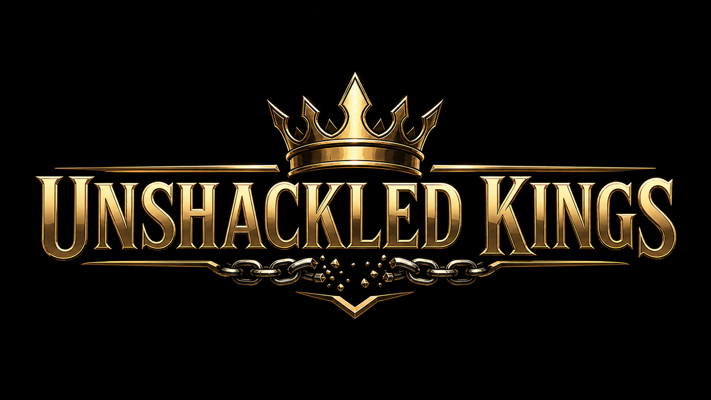

Identity
You cannot build confidence on a weak identity. Week 1 moves you from "Do women or employers want me?" to "Am I becoming a man I respect?"

Start Now
30-Day Self-Mastery Program
Stop chasing. Stop simping. Start building.
A 30-day self-mastery program for men tired of being ignored, rejected, drained by porn, controlled by lust, and addicted to female approval.
Take back your attention. Master your urges. Build discipline, purpose, and real confidence from within.
No pickup tricks. No victim mindset. No excuses. Just training.
Pain Point
Let's be honest.
A lot of men are angry because they feel ignored, rejected, and invisible to women.
They get swiped left.
They get friend-zoned.
They watch other guys get attention while they sit there wondering what is wrong with them.
They waste energy chasing women who barely notice them.
They fall into porn, fantasy, scrolling, and bitterness.
But the real problem is deeper than dating.
The problem is that you gave women the power to decide whether you are valuable.
That is the chain that shackles you.
Unshackled Kings is built to break it.
The Hard Truth
If one woman ignoring you can ruin your day, you are not free.
If a text message controls your mood, you are not free.
If porn owns your attention, you are not free.
If you are constantly checking likes, replies, views, and attention, you are not free.
If you are controlled by alcohol, sports betting or drugs, you are not free.
If your confidence depends on female approval, your muscles or your bank account, you are not confident.
You are dependent.
Unshackled Kings is not here to comfort that version of you. It is here to train you out of him.
Secondary Badge
Women are not the mission.
Women are not the enemy.
Women are not the prize.
The mission is self-mastery. The enemy is weakness. The prize is becoming a man who does not need approval to know his worth.
When you stop chasing women for validation, something changes.
You stop over-texting.
You stop performing.
You stop begging for signs.
You stop pedestalizing women who barely respect you.
You stop wasting your energy on fantasy.
And yes, that can make you more attractive. Not because you learned some pickup trick. Because desperation repels. Self-respect attracts.
What Is Unshackled Kings?
Unshackled Kings is a 30-day self-mastery program for men who are done being controlled by lust, rejection, porn, laziness, insecurity, anxiety, and the need for women's approval.
The program is inspired by timeless principles of self-realization, discipline, detachment, and purpose, adapted into a direct, practical system for men in the modern world.
Who This Is For
Being ignored by women
Getting crushed by rejection
Feeling like the nice guy who never gets chosen
Watching porn and feeling weak afterward
Obsessing over texts, likes, replies, and attention
Putting women on a pedestal
Simping for women who barely respect him
Feeling angry, jealous, bitter, or invisible
Scrolling instead of building
Complaining instead of building
Raging instead of building
Starting goals and quitting
Feeling anxious, depressed, lazy, or directionless
Knowing he is capable of more but living below his standard
If that hits too close, good. That means you are exactly who this was built for.
The 4 Pillars
You cannot build confidence on a weak identity. Week 1 moves you from "Do women or employers want me?" to "Am I becoming a man I respect?"
Confidence is built through proof. Wake up. Train. Work. Read. Cut the scrolling. Keep your word.
No porn. No thirst traps. No validation texting. No chasing women who are not choosing you. Take your attention back.
Define a 90-day target, audit your circle, cut weakening influences, and build a plan that continues after the reset.
The 30-Day Program
Goal: Stop identifying as rejected, desperate, poor, unwanted, weak, or dependent on female attention.
Daily practices: Morning identity statement, observer exercise, validation-seeking tracker, rejection reaction journal, nightly self-audit, social comparison awareness.
Core lesson: You are not the desperate voice in your head. You are the man who decides whether that voice gets obeyed.
Goal: Build self-respect through action.
Daily practices: Same wake-up time, physical training, focused work or study block, 20 minutes of reading, no mindless scrolling, one daily promise kept, evening discipline score.
Core lesson: Self-respect is earned every time you do what weakness begged you not to do.
Goal: Break the addiction to porn, lust, chasing, and female validation.
Daily practices: No porn, no thirst traps, no validation texting, no checking for attention, no chasing low interest, urge replacement, pushups or a walk when urges spike.
Core lesson: A man who controls his attention controls his life.
Goal: Build a mission strong enough to replace distraction.
Daily practices: Write your 90-day mission, define your top 3 standards, audit your closest influences, reduce weakening inputs, find one stronger environment, create your post-program plan.
Core lesson: A king does not drift. He moves with purpose.
What You'll Gain
More control over porn and urges
Less dependence on female approval
More discipline and structure
More confidence from within
A clearer mission
Better control over your attention
Less emotional reaction to rejection
A stronger identity
A higher standard for yourself
A better relationship with women because you stop needing them to validate you
You do not become unshackled by reading about it. You become unshackled by doing the work.
Program Offer
Launch Price: $47
One-time payment. Instant access.
30-day program structure
Weekly lessons
Daily habits
Identity reset exercises
Validation detox tracker
Porn and thirst trap reset
Urge control protocol
Discipline scorecard
Purpose worksheet
Circle audit
90-day post-program mission plan
Launch Price
$47
One-time payment. Instant access.
Start the 30-Day Reset for $47Built for men who are done making excuses.
FAQ
No. Unshackled Kings is inspired by timeless principles of self-realization, discipline, detachment, and purpose, but the program is presented in a modern, secular, and practical way. You do not need to follow any religion to use it.
No. This program is not about hating women. It is about no longer needing female approval to feel valuable. The goal is to become stronger, more disciplined, more grounded, and less controlled by rejection, lust, porn, and validation.
The program does not promise that women will suddenly want you. The promise is even better: you will stop needing women to want you in order to respect yourself. When a man becomes less needy, more disciplined, more focused, and more self-respecting, he often becomes more attractive naturally.
The program includes a porn and thirst trap reset, urge control protocol, and attention training. It is not medical treatment or therapy, but it can be a strong self-discipline framework for men who want to regain control.
This program can help build structure, discipline, confidence, and purpose. It is not a replacement for professional mental health care. If you are dealing with serious depression, anxiety, self-harm thoughts, or severe mental health symptoms, you should seek help from a qualified professional.
Most daily practices take 20 to 45 minutes. The real commitment is not time. It is honesty, discipline, and consistency.
Stop chasing. Stop simping. Start building.
Start the 30-Day Reset for $47